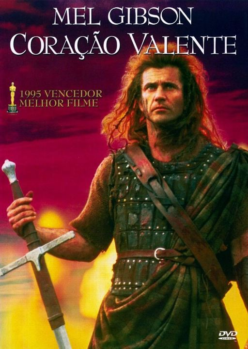
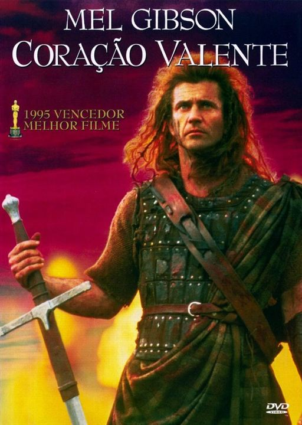

Mel Gibson, quando entrou no cenário cinematográfico, recebeu excelentes elogios de críticos de cinema,
e muitas comparações com estrelas do cinema clássico. Em 1982, Vincent Canby escreveu que "Mr. Gibson lembra o jovem
Steve McQueen. Eu não consigo definir a "qualidade de estrela", mas de qualquer maneira, Mr. Gibson a tem". Gibson
também foi tido como "uma mistura de Clark Gable e Humphrey Bogart". A aparência do físico de Mel Gibson faz dele natural
para papéis de filmes de ação, como na série de filmes Mad Max, e na série de filmes Máquina Mortífera. Depois, Gibson
expandiu seus trabalhos para uma variedade de papéis, como Hamlet, e comédias como Maverick e Do que as Mulheres Gostam.
Seus maiores sucessos financeiros e artísticos vieram quando ele expandiu seu trabalho para a direção e a produção, como
em The Man without a Face, em 1993, Coração Valente, em 1995, O Patriota, em 2000, A Paixão de Cristo, em 2004, e
Apocalypto, em 2006. Gibson foi cotado para papéis em Batman, GoldenEye, Amadeus, Gladiador, The Golden Child, X-Men,
Robin Hood: O Príncipe dos Ladrões, Noiva em Fuga e Primary Colors. Sean Connery já sugeriu que Gibson fosse James Bond.
.jpeg) 
